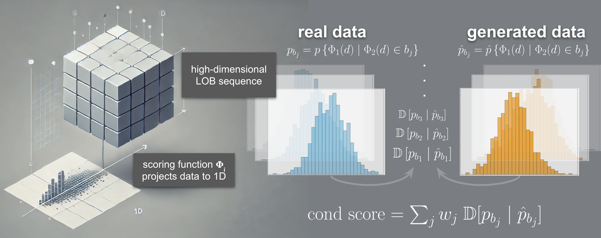

LOB-Bench: Benchmarking Generative AI for Finance – an Application to Limit Order Book Data
- Peer Nagy*
- Sascha Frey*
- Kang Li
- Bidipta Sarkar
- Svitlana Vyetrenko
- Stefan Zohren
- Anisoara Calinescu
- Jakob Foerster

Abstract
While financial data presents one of the most challenging and interesting sequence modelling tasks due to high noise, heavy tails, and strategic interactions, progress in this area has been hindered by the lack of consensus on quantitative evaluation paradigms. To address this, we present LOB-Bench, a benchmark, implemented in python, designed to evaluate the quality and realism of generative message-by-order data for limit order books (LOB) in the LOBSTER format. Our framework measures distributional differences in conditional and unconditional statistics between generated and real LOB data, supporting flexible multivariate statistical evaluation. The benchmark also includes features commonly used LOB statistics such as spread, order book volumes, order imbalance, and message inter-arrival times, along with scores from a trained discriminator network. Lastly, LOB-Bench contains "market impact metrics", i.e. the cross-correlations and price response functions for specific events in the data. We benchmark generative autoregressive state-space models, a (C)GAN, as well as a parametric LOB model and find that the autoregressive GenAI approach beats traditional model classes.
How to Use
TODO
Leaderboard
TODO
GOOG
| Model | L1 | Wasserstein | Code | Models |
|---|---|---|---|---|
| LobS5 (1) | ||||
| RWKV4 (1) | ||||
| RWKV6 (1) | ||||
| Baseline (1) | ||||
| Coletta (1) |
INTC
| Model | L1 | Wasserstein | Code | Models |
|---|---|---|---|---|
| LobS5 (1) | ||||
| RWKV6 (1) | ||||
| Baseline (1) | ||||
| RWKV4 (1) |
Citation
The website template was borrowed from Jon Barron
[1] Peer Nagy and Sascha Frey and Kang Li and Bidipta Sarkar and Svitlana Vyetrenko and Stefan Zohren and Anisoara Calinescu and Jakob Foerster, LOB-Bench: Benchmarking Generative AI for Finance – an Application to Limit Order Book Data, 2025.